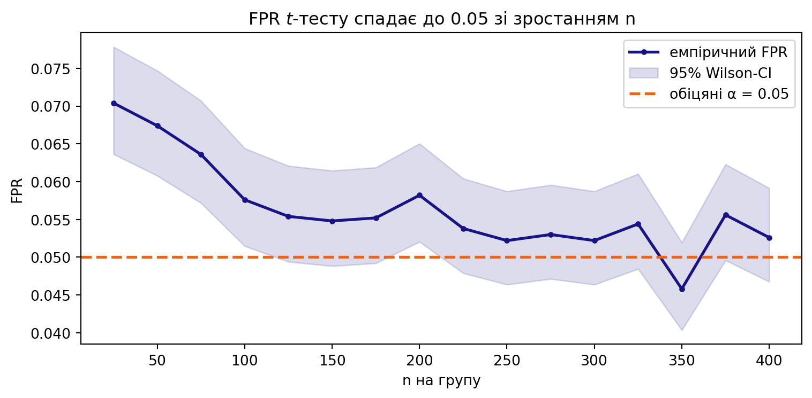

Метод Монте-Карло: валідація статистичних критеріїв
Автор
Приналежність
Ihor Miroshnychenko
Kyiv School of Economics
Дата публікації
June 8, 2026
Що ми робимо сьогодні
На лекції ми побачили головну ідею методу Монте-Карло: щоб перевірити будь-який статистичний критерій, треба багато разів повторити один і той самий експеримент із відомою відповіддю і порахувати, як часто критерій помиляється. Так ми відповіли на три питання: чи коректний критерій?, який критерій кращий?, з якого розміру вибірки можна довіряти \(t\)-тесту?
Сьогодні збираємо це в один інструмент — власну функцію simulate_rejections(), яку нарощуємо крок за кроком (FPR → довірчий інтервал → дві вибірки → потужність), а наприкінці робимо її «історичного близнюка» thousand_aa_tests() для перевірки на реальних логах.
ПриміткаПравила гри
Інструмент, який ми будуємо сьогодні, — це Монте-Карло валідатор, а не сам \(t\)-тест. Сам критерій (те, що ми перевіряємо) беремо готовий: scipy.stats.ttest_ind — або ваш власний my_two_sample_t_test з Практики 4.
Кожна версія — це маленьке розширення попередньої.
Кожен фінальний крок перевикористовує попередні функції, а не дублює їх.
Після кожної версії — блок «Ваша черга» з мінізадачею.
Усюди \(H_0\)/\(H_1\) генеруємо самі (роль «всеведучого бога»): лише так ми знаємо правильну відповідь і можемо рахувати помилки.
1 Кейс: чи можна довіряти \(t\)-тесту на ARPU GreenBowl?
Працюємо з тим самим застосунком доставки GreenBowl, що й у Практиці 4. Команда експериментів запускає багато дрібних A/B-тестів: окремо по містах і по категоріях кухні. У великих містах вибірки великі, а в нових — маленькі (кілька десятків користувачів за тиждень). Метрика — ARPU (виторг на користувача), сильно скошена.
Одиниця спостереження: один користувач за тиждень.
Метрика: ARPU у гривнях — неперервна, додатна, скошена (логнормальна: маса дрібних замовлень + довгий правий хвіст «китів»).
Критерій під перевіркою: двовибірковий \(t\)-тест (Welch за замовчуванням).
Рівень значущості:\(\alpha = 0{,}05\).
ВажливоПитання, на які сьогодні відповість Монте-Карло
Чи коректний\(t\)-тест на наших скошених ARPU? (тримає він обіцяні 5% хибних спрацювань чи ні?)
З якого розміру вибірки йому можна довіряти в маленьких містах?
Який варіант кращий — Стьюдента чи Welch — коли групи різного розміру й різного розкиду?
Яку потужність має тест на реалістичному ефекті — і чи вистачить її, щоб зловити ефект акції?
Жодне з цих питань не можна чесно закрити «теоремою з підручника» — лише симуляцією на наших даних.
Генеруємо скошений ARPU так само, як у Практиці 4 (логнормальний розподіл із заданим середнім; параметр sigma регулює розкид/важкість хвоста, не зміщуючи середнє):
Розподіл явно не нормальний. Питання лекції: чи рятує \(t\)-тест ЦГТ — і з якого \(n\)? Перевіримо це не на віру, а симуляцією.
2 Версія 1 — FPR (точкова оцінка)
Найпростіша перевірка: запускаємо A/A-тест (дві групи з однакового розподілу, тож \(H_0\) заведомо вірна) багато разів і рахуємо, у якій частці випадків критерій хибно відхилив \(H_0\). Це і є FPR (false positive rate) — частота помилок першого роду.
def simulate_fpr(gen, n, n_exps=10_000, alpha=0.05, seed=73):"""Версія 1. Емпіричний FPR двовибіркового t-тесту під H0. gen(n) -> вибірка розміру n. Обидві групи беремо з gen → H0 вірна. """ np.random.seed(seed) bad_cnt =0for _ inrange(n_exps): test = gen(n) # H0 вірна: control = gen(n) # обидві групи з того самого розподілу pvalue = stats.ttest_ind(test, control).pvalue bad_cnt += pvalue < alphareturn bad_cnt / n_exps
Перевіримо на скошених ARPU. Спершу — «достатньо велика» вибірка (\(n = 200\) користувачів на групу):
При \(n=200\) FPR \(\approx 0{,}05\) — начебто чудово. При \(n=30\) виходить трохи менше. Але точкова оцінка гуляє від запуску до запуску: чи це «ок», чи критерій справді зміщений? Поки що сказати не можна — потрібен довірчий інтервал (Версія 2).
ПорадаВаша черга 1
Запустіть simulate_fpr із різними seed (напр. 1, 2, 3) при фіксованому \(n=200\). Наскільки «стрибає» точкова оцінка? Це і є шум, який ми приборкаємо інтервалом.
Збільште n_exps із 10 000 до 50 000 при \(n=200\). Оцінка стає стабільнішою? Чому?
Прикладне. У новому місті за тиждень набралось лише \(n=15\) користувачів на групу. Оцініть FPR. Тест уже «їде»?
ПриміткаРозв’язання 1
# (1) шум точкової оцінкиests = [simulate_fpr(arpu_aa, 200, n_exps=10_000, seed=s) for s in (1, 2, 3)]print(f"FPR при різних seed: {[f'{e:.4f}'for e in ests]} "f"→ розкид ≈ {max(ests)-min(ests):.4f}")# (2) більше експериментів → стабільніша оцінкаprint(f"n_exps=10k: {simulate_fpr(arpu_aa, 200, n_exps=10_000):.4f}")print(f"n_exps=50k: {simulate_fpr(arpu_aa, 200, n_exps=50_000):.4f}")# (3) дуже мала вибіркаprint(f"FPR при n=15: {simulate_fpr(arpu_aa, 15):.4f}")
FPR при різних seed: ['0.0487', '0.0491', '0.0457'] → розкид ≈ 0.0034
n_exps=10k: 0.0496
n_exps=50k: 0.0494
FPR при n=15: 0.0465
Інтерпретація. Точкова оцінка FPR — сама випадкова величина зі стандартною похибкою \(\sqrt{\alpha(1-\alpha)/n_{\text{exps}}}\). Більше експериментів → вужчий розкид (як SEM у Практиці 4). На \(n=15\) скошеність тягне FPR ще нижче 5% — тест стає консервативним (помиляється рідше, ніж заявлено). Це безпечно, але коштує потужності. Точну межу встановимо лише з довірчим інтервалом.
3 Версія 2 — довірчий інтервал для FPR
Точкова оцінка без інтервалу — це пастка з лекції. Результат A/A — бернуллівська величина (помилився/ні), тож беремо готовий інтервал Уілсона і формулюємо чесний вердикт: чи лежить \(\alpha\) всередині?
def simulate_fpr(gen, n, n_exps=10_000, alpha=0.05, seed=73):"""Версія 2. Повертає dict: FPR + 95% Wilson-CI + вердикт.""" np.random.seed(seed) bad_cnt =0for _ inrange(n_exps): bad_cnt += stats.ttest_ind(gen(n), gen(n)).pvalue < alpha fpr = bad_cnt / n_exps lo, hi = proportion_confint(bad_cnt, n_exps, alpha=0.05, method="wilson")if lo <= alpha <= hi: verdict ="✅ валідний (α всередині CI)"elif hi < alpha: verdict ="🟡 консервативний (FPR < α: безпечно, але менш потужний)"else: verdict ="⛔ НЕвалідний (FPR > α: завелика помилка I роду)"return {"fpr": fpr, "ci": (lo, hi), "verdict": verdict}
for n in (200, 30): r = simulate_fpr(arpu_aa, n)print(f"n={n:>3d}: FPR={r['fpr']:.4f} "f"CI=({r['ci'][0]:.4f}, {r['ci'][1]:.4f}) → {r['verdict']}")
n=200: FPR=0.0496 CI=(0.0455, 0.0540) → ✅ валідний (α всередині CI)
n= 30: FPR=0.0445 CI=(0.0406, 0.0487) → 🟡 консервативний (FPR < α: безпечно, але менш потужний)
ПриміткаЩо показав вердикт
\(n=200\):\(\alpha = 0{,}05\)всередині CI → на скошених ARPU \(t\)-тест коректний, щойно вибірка пристойного розміру. Це ЦГТ + Слуцького з лекції про \(t\)-тест у дії.
\(n=30\): верхня межа CI нижче 5% → тест консервативний. Помиляється рідше, ніж обіцяв, — це не страшно (хибних розкаток буде менше), але потужність нижча за можливу.
ПорадаВаша черга 2
Знайдіть приблизно мінімальне \(n\), при якому вердикт для arpu_aa стає «✅ валідний» (переберіть кілька значень).
Підсильте скошеність (sigma=1.1 у генераторі). Як зсувається межа, з якої тест стає валідним? Звʼяжіть це з «достатнім \(n\)» для ЦГТ.
Прикладне. Метрика «частка користувачів, що зробили ≥2 замовлення» — бернуллівська. Згенеруйте A/A для неї (lambda n: (np.random.rand(n) < 0.3).astype(float)) і перевірте \(t\)-тест при \(n=30\). Чи валідний?
ПриміткаРозв’язання 2
# (1) межа валідності для помірної скошеностіprint("Помірна скошеність (sigma=0.6):")for n in (30, 60, 100, 150, 200): r = simulate_fpr(arpu_aa, n)print(f" n={n:>3d}: FPR={r['fpr']:.4f} → {r['verdict']}")# (2) сильніша скошеність — межа зсувається вправоheavy_aa =lambda n: arpu_sample(250, n, sigma=1.1)print("\nСильна скошеність (sigma=1.1):")for n in (100, 200, 400): r = simulate_fpr(heavy_aa, n)print(f" n={n:>3d}: FPR={r['fpr']:.4f} → {r['verdict']}")# (3) бернуллівська метрикаbinom_aa =lambda n: (np.random.rand(n) <0.3).astype(float)r = simulate_fpr(binom_aa, 30)print(f"\nБернуллі p=0.3, n=30: FPR={r['fpr']:.4f} → {r['verdict']}")
Помірна скошеність (sigma=0.6):
n= 30: FPR=0.0445 → 🟡 консервативний (FPR < α: безпечно, але менш потужний)
n= 60: FPR=0.0452 → 🟡 консервативний (FPR < α: безпечно, але менш потужний)
n=100: FPR=0.0444 → 🟡 консервативний (FPR < α: безпечно, але менш потужний)
n=150: FPR=0.0461 → ✅ валідний (α всередині CI)
n=200: FPR=0.0496 → ✅ валідний (α всередині CI)
Сильна скошеність (sigma=1.1):
n=100: FPR=0.0411 → 🟡 консервативний (FPR < α: безпечно, але менш потужний)
n=200: FPR=0.0484 → ✅ валідний (α всередині CI)
n=400: FPR=0.0453 → 🟡 консервативний (FPR < α: безпечно, але менш потужний)
Бернуллі p=0.3, n=30: FPR=0.0504 → ✅ валідний (α всередині CI)
Інтерпретація. Що важчий хвіст, то більший \(n\) потрібен ЦГТ — сильно скошеному ARPU треба помітно більше спостережень, ніж помірному. Для бінарної метрики з не надто малим \(p\)\(t\)-тест зазвичай валідний уже на скромних \(n\). Висновок універсальний: «достатнє \(n\)» залежить від форми даних, і дізнатися його можна лише симуляцією.
4 Версія 3 — універсальний simulate_rejections
Досі ми генерували обидві групи з одного генератора. Реальність складніша: тест і контроль можуть бути різної форми, різного розміру, а ще нас цікавлять різні alternative і вибір Стьюдент/Welch. Узагальнюємо simulate_fpr в один інструмент — simulate_rejections.
def simulate_rejections(test_gen, control_gen, n_test, n_control=None, n_exps=10_000, alpha=0.05, equal_var=False, alternative="two-sided", seed=73):"""Універсальний Монте-Карло валідатор. Рахує частку відхилень H0 + 95% Wilson-CI. • test_gen ≡ control_gen, рівні середні → частка = FPR • середні різні (є ефект) → частка = потужність (TPR) equal_var=False → Welch (дефолт); True → t-тест Стьюдента. """if n_control isNone: n_control = n_test np.random.seed(seed) rej =0for _ inrange(n_exps): test = test_gen(n_test) control = control_gen(n_control) pvalue = stats.ttest_ind(test, control, equal_var=equal_var, alternative=alternative).pvalue rej += pvalue < alpha rate = rej / n_exps lo, hi = proportion_confint(rej, n_exps, alpha=0.05, method="wilson")return {"rate": rate, "ci": (lo, hi)}
4.1 Підступний кейс: однакове середнє, різна форма
Тепер \(H_0\)все ще вірна (обидва середні = 250 ₴), але групи різні за розкидом. Бізнес-аналогія: акція не змінила середній чек, але зробила тестову групу різноріднішою (хтось почав замовляти більше, хтось менше). У новому місті обидві групи маленькі — \(n = 30\).
test_wide =lambda n: arpu_sample(250, n, sigma=0.8) # ширший розкидctrl_tight =lambda n: arpu_sample(250, n, sigma=0.4) # вужчий розкидr = simulate_rejections(test_wide, ctrl_tight, n_test=30)print(f"FPR = {r['rate']:.4f} CI = ({r['ci'][0]:.4f}, {r['ci'][1]:.4f})")print(f"5% всередині CI? {r['ci'][0] <=0.05<= r['ci'][1]}")
FPR = 0.0727 CI = (0.0678, 0.0780)
5% всередині CI? False
ПопередженняТест не валідний тут
FPR помітно вище 5%, і \(\alpha\)поза CI. На малих різнорідних групах \(t\)-тест «бачить ефект» частіше, ніж дозволено, — кожна така помилка це хибна розкатка фічі, що насправді нічого не дала. Питання: з якого \(n\) він виправляється? (Версія 4.)
ПорадаВаша черга 3
Зробіть розкид груп однаковим (sigma=0.6 в обох) при \(n=30\). FPR повертається до 5%? Тобто проблема саме в нерівності розкиду на малому \(n\).
Поміняйте alternative на "greater"/"less". Як це впливає на FPR у цьому A/A?
Прикладне. Уявіть «викид-кита»: домішайте до тестової групи 1% величезних замовлень (np.where(np.random.rand(n)<0.01, 50000, base)). Що стає з FPR?
ПриміткаРозв’язання 3
# (1) рівний розкид рятуєsame =lambda n: arpu_sample(250, n, sigma=0.6)r = simulate_rejections(same, same, n_test=30)print(f"Рівний розкид, n=30: FPR={r['rate']:.4f} "f"({'✅'if r['ci'][0] <=0.05<= r['ci'][1] else'⛔'})")# (2) односторонніfor alt in ("greater", "less", "two-sided"): r = simulate_rejections(test_wide, ctrl_tight, 30, alternative=alt)print(f" alt={alt:>9s}: FPR={r['rate']:.4f}")# (3) кит-викид у тестіdef whale(n): base = arpu_sample(250, n, sigma=0.5)return np.where(np.random.rand(n) <0.01, 50000.0, base)r = simulate_rejections(whale, lambda n: arpu_sample(250, n, sigma=0.5), n_test=200)print(f"Кит-викид у тесті, n=200: FPR={r['rate']:.4f} "f"({'✅'if r['ci'][0] <=0.05<= r['ci'][1] else'⛔'})")
Інтерпретація. Зламати \(t\)-тест на малому \(n\) можна нерівністю розкиду (п.1 показує: рівні дисперсії → FPR повертається до 5%). Односторонні версії перерозподіляють помилку по хвостах, але сумарну проблему не прибирають. «Кит-викид» — найгірший ворог середнього: один гігант на 50 000 ₴ роздуває дисперсію тестової групи й збиває FPR навіть на \(n=200\). На практиці таких китів вінзоризують або переходять на робастні метрики.
5 Версія 4 — мінімальний розмір вибірки
Маємо інструмент — застосуймо його так, як на лекції: проганяємо перевірку для зростаючих \(n\) і зупиняємось, щойно \(\alpha\)вперше потрапляє в довірчий інтервал. Функція перевикористовуєsimulate_rejections.
def min_sample_size(test_gen, control_gen, grid, alpha=0.05, **kw):"""Найменший n із grid, при якому α лежить у CI для FPR. Reuses V3."""for n in grid: r = simulate_rejections(test_gen, control_gen, n_test=n, alpha=alpha, **kw) lo, hi = r["ci"] ok = lo <= alpha <= hiprint(f" n={n:>4d}: FPR={r['rate']:.4f} "f"CI=({lo:.4f}, {hi:.4f}) {'✅'if ok else'⛔'}")if ok:return nreturnNone
n_min = min_sample_size(test_wide, ctrl_tight, grid=range(50, 401, 50))print(f"\nМінімальний розмір вибірки: ~{n_min} на групу")
n= 50: FPR=0.0665 CI=(0.0618, 0.0716) ⛔
n= 100: FPR=0.0555 CI=(0.0512, 0.0602) ⛔
n= 150: FPR=0.0516 CI=(0.0474, 0.0561) ✅
Мінімальний розмір вибірки: ~150 на групу
Для цих різнорідних ARPU-груп \(t\)-тесту потрібно близько 150 користувачів на групу, перш ніж йому можна довіряти. У великих містах це не проблема; у нових — сигнал зачекати з висновками або агрегувати дані.
Код
grid = np.arange(25, 401, 25)fprs, los, his = [], [], []for n in grid: r = simulate_rejections(test_wide, ctrl_tight, n_test=n, n_exps=5000) fprs.append(r["rate"]); los.append(r["ci"][0]); his.append(r["ci"][1])fig, ax = plt.subplots(figsize=(8, 4))ax.plot(grid, fprs, color=blue, lw=2, marker="o", ms=3, label="емпіричний FPR")ax.fill_between(grid, los, his, color=blue, alpha=0.15, label="95% Wilson-CI")ax.axhline(0.05, color=red, ls="--", lw=2, label="обіцяні α = 0.05")ax.set_xlabel("n на групу")ax.set_ylabel("FPR")ax.set_title("FPR $t$-тесту спадає до 0.05 зі зростанням n")ax.legend()plt.tight_layout()plt.show()

ПорадаВаша черга 4
Прогоніть min_sample_size для рівних дисперсій (обидва sigma=0.6). Поріг сильно менший?
Передайте alternative="greater" у min_sample_size (через **kw). Чи змінюється поріг для одностороннього тесту?
Прикладне. Зменшіть n_exps до 2000 у simulate_rejections всередині пошуку. Чому при цьому пошук стає ненадійним (CI ширшає)? Який компроміс «точність ↔︎ час»?
Інтерпретація. За рівних дисперсій \(t\)-тест валідний уже на скромних \(n\) — проблема саме в поєднанні скошеності й нерівності розкиду. Менший n_exps пришвидшує пошук, але робить CI ширшим, і вердикт «α всередині» стає крихким: можна випадково «оголосити» тест валідним зарано. Класичний компроміс точність/час із лекції: n_exps → ∞ дає точність, але коштує часу.
6 Версія 5 — потужність (TPR) і порівняння критеріїв
Той самий інструмент міряє потужність: треба лише згенерувати дані, де вірна альтернатива (тестова група має вищий ARPU). Тоді відхилення \(H_0\) — це правильне спрацювання, і його частка = TPR.
control =lambda n: arpu_sample(250, n) # старе менюfor lift, n in [(15, 500), (15, 2000), (30, 500), (30, 2000)]: test =lambda n, L=lift: arpu_sample(250+ L, n) # ефект +L ₴ r = simulate_rejections(test, control, n_test=n, alternative="greater")print(f"lift=+{lift} ₴, n={n:>4d}: power = {r['rate']:.3f} "f"CI=({r['ci'][0]:.3f}, {r['ci'][1]:.3f})")
lift=+15 ₴, n= 500: power = 0.401 CI=(0.391, 0.411)
lift=+15 ₴, n=2000: power = 0.877 CI=(0.871, 0.883)
lift=+30 ₴, n= 500: power = 0.858 CI=(0.851, 0.865)
lift=+30 ₴, n=2000: power = 1.000 CI=(1.000, 1.000)
ПриміткаЯк читати таблицю
Потужність зростає і від розміру ефекту, і від розміру вибірки. Маленький ефект (+15 ₴) на \(n=500\) ловиться лише в ~40% випадків — недостатньо (золотий стандарт — 80%); тож або більший \(n\), або чекаємо більший ефект. Це той самий звʼязок \(n \leftrightarrow\) MDE, що й у Практиці 4, але тепер виміряний симуляцією, без формул.
6.1 Який критерій кращий: Стьюдент чи Welch?
Обидва ми знаємо з Практики 4. На лекції побачили: вони не взаємозамінні. Реалістичний A/B: фічу розкотили на 20% користувачів, тож тестова група менша; до того ж вона різнорідніша (акція додала розкиду). \(H_0\) вірна (середні рівні).
За нерівних розмірів груп і нерівних дисперсій Стьюдент роздуває FPR у 2–3 рази (тут ~13% замість 5%) — він занижує стандартну похибку й дає хибно-позитивні. Welch тримає ~5%. Саме тому в Практиці 4 дефолтом був equal_var=False. Монте-Карло наочно довів те, що ми брали на віру.
ПорадаВаша черга 5
Зробіть групи рівними (\(n=500\) кожна), лишивши нерівний розкид. Чи зникає перевага Welch? (підказка з Практики 4: при рівних \(n\) різниця мала).
Виміряйте потужність Стьюдента й Welch на ефекті +20 ₴ при тих самих 200/800. Чи платить Welch за коректність помітною втратою потужності?
Прикладне. Команда хоче «зловити +15 ₴ із power ≥ 0.8» на рівних групах. Переберіть \(n \in \{1000, 2000, 4000\}\) і знайдіть достатній.
ПриміткаРозв’язання 5
# (1) рівні групи — перевага Welch зникаєs = simulate_rejections(test_small, ctrl_big, 500, 500, equal_var=True)["rate"]w = simulate_rejections(test_small, ctrl_big, 500, 500, equal_var=False)["rate"]print(f"Рівні n=500: Стьюдент={s:.4f} Welch={w:.4f} → майже однакові")# (2) потужність — ціна коректностіtest20 =lambda n: arpu_sample(270, n, sigma=0.6)ps = simulate_rejections(test20, ctrl_big, 200, 800, equal_var=True, alternative="greater")["rate"]pw = simulate_rejections(test20, ctrl_big, 200, 800, equal_var=False, alternative="greater")["rate"]print(f"Power(+20 ₴): Стьюдент={ps:.3f} Welch={pw:.3f} "f"(але Стьюдент тут НЕвалідний → його потужність оманлива)")# (3) скільки треба на +15 ₴control =lambda n: arpu_sample(250, n)print("\nПошук n для power≥0.8 на +15 ₴ (рівні групи):")for n in (1000, 2000, 4000): test15 =lambda n: arpu_sample(265, n) p = simulate_rejections(test15, control, n_test=n, alternative="greater")["rate"]print(f" n={n:>4d}: power={p:.3f}{'✅'if p>=0.8else''}")
Рівні n=500: Стьюдент=0.0497 Welch=0.0495 → майже однакові
Power(+20 ₴): Стьюдент=0.615 Welch=0.445 (але Стьюдент тут НЕвалідний → його потужність оманлива)
Пошук n для power≥0.8 на +15 ₴ (рівні групи):
n=1000: power=0.631
n=2000: power=0.877 ✅
n=4000: power=0.990 ✅
Інтерпретація. При рівних групах Стьюдент і Welch майже збігаються — біда лише за нерівних \(n\). Порівнювати потужність можна тільки серед валідних критеріїв: вища «потужність» Стьюдента — це наслідок його завищеного FPR, а не реальна перевага. Для +15 ₴ із power ≥ 0.8 на рівних групах треба кілька тисяч користувачів на групу — маленький ефект дорогий (як і MDE-trade-off із Практики 4).
7 Фінал — валідація на історичних даних (1000 A/A)
Штучні генератори зручні, але «а раптом мої реальні дані інші?». Відповідь із лекції: метод тисячі A/A-тестів. Беремо історичні логи, ріжемо їх на зрізи (місто × кухня), і на кожному зрізі робимо A/A: випадково ділимо користувачів навпіл (жодного впливу → \(H_0\) вірна) і запускаємо критерій. Частка спрацювань по всіх зрізах = FPR на реальних даних.
Код
# Імітуємо «історичний» лог ARPU: 50 міст × 8 кухонь = 400 зрізівnp.random.seed(2026) # відтворюваність: arpu_sample бере глобальний RNGrng = np.random.default_rng(2026)cities = [f"city_{i}"for i inrange(50)]cuisines = ["pizza", "sushi", "burger", "vegan", "asian", "bbq", "dessert", "salad"]rows = []for city in cities: base = rng.uniform(150, 400) # своя середня ARPUfor cuisine in cuisines: n = rng.integers(150, 500) sig = rng.uniform(0.5, 0.9) # своя скошеність arpu = arpu_sample(base, n, sigma=sig) rows.append(pd.DataFrame({"city": city, "cuisine": cuisine, "arpu": arpu}))log = pd.concat(rows, ignore_index=True)print(f"користувачів: {len(log):,} зрізів (датасетів): "f"{log.groupby(['city','cuisine']).ngroups}")
користувачів: 127,228 зрізів (датасетів): 400
def thousand_aa_tests(log, alpha=0.05, lift=0.0, equal_var=False, seed=1):"""Тисяча A/A (або A/B) тестів на історичних зрізах. Reuses ttest_ind. lift=0 → A/A → частка = FPR на реальних даних. lift>0 → A/B із змодельованим ефектом → частка = потужність. Користувачів у кожному зрізі ділимо НЕЗАЛЕЖНО (інакше тести залежні). """ rng, rej, k = np.random.default_rng(seed), 0, 0for _, g in log.groupby(["city", "cuisine"]): arpu = g["arpu"].to_numpy() idx = rng.permutation(len(arpu)) # незалежний поділ half =len(arpu) //2 control = arpu[idx[:half]] test = arpu[idx[half:2* half]] * (1+ lift) rej += stats.ttest_ind(test, control, equal_var=equal_var).pvalue < alpha k +=1 lo, hi = proportion_confint(rej, k, alpha=0.05, method="wilson")return {"rate": rej / k, "ci": (lo, hi), "k": k}
aa = thousand_aa_tests(log)print(f"A/A FPR на {aa['k']} зрізах: {aa['rate']:.4f} "f"CI=({aa['ci'][0]:.4f}, {aa['ci'][1]:.4f}) "f"→ {'✅ валідний'if aa['ci'][0] <=0.05<= aa['ci'][1] else'⛔'}")print("\nПотужність на змодельованому ефекті (lift % від ARPU):")for lift in (0.03, 0.05, 0.10): r = thousand_aa_tests(log, lift=lift)print(f" lift=+{lift:.0%}: power = {r['rate']:.3f} "f"CI=({r['ci'][0]:.3f}, {r['ci'][1]:.3f})")
A/A FPR на 400 зрізах: 0.0500 CI=(0.0326, 0.0760) → ✅ валідний
Потужність на змодельованому ефекті (lift % від ARPU):
lift=+3%: power = 0.080 CI=(0.057, 0.111)
lift=+5%: power = 0.102 CI=(0.076, 0.136)
lift=+10%: power = 0.203 CI=(0.166, 0.245)
ВажливоЧому це переконливіше за штучні дані
На зрізах — справжній розподіл ARPU GreenBowl, з усіма реальними китами й скошеністю. \(\alpha = 0{,}05\) всередині CI → інфраструктурі A/A можна довіряти. Для потужності ефекту нема, тож ми його домоделювали (множимо тест на \(1+\text{lift}\)): точний розмір не критичний, особливо коли порівнюємо два критерії. CI ширший, ніж на штучних даних, бо зрізів лише 400 — більше логів дали б точнішу оцінку.
ПорадаВаша черга 6
Порівняйте на історичних зрізах Стьюдента (equal_var=True) і Welch. Тут поділ 50/50 (рівні групи) — різниця помітна?
Додайте третій вимір нарізки — місяць (додайте випадковий month у лог). Скільки тепер зрізів і як це впливає на ширину CI?
Прикладне. Один зріз = один A/A. Покажіть, що один A/A-тест нічого не доводить: візьміть будь-який зріз і порахуйте на ньому FPR на 2000 повторних поділах. Чому висновок дає лише сукупність зрізів?
ПриміткаРозв’язання 6
# (1) Стьюдент vs Welch на рівних 50/50 зрізахst = thousand_aa_tests(log, equal_var=True)["rate"]we = thousand_aa_tests(log, equal_var=False)["rate"]print(f"Історичні зрізи (50/50): Стьюдент={st:.4f} Welch={we:.4f} → близькі")# (3) один зріз нічого не доводитьone = log.groupby(["city", "cuisine"]).get_group(("city_0", "pizza"))["arpu"].to_numpy()rng = np.random.default_rng(0); rej =0for _ inrange(2000): idx = rng.permutation(len(one)); h =len(one) //2 rej += stats.ttest_ind(one[idx[h:2*h]], one[idx[:h]], equal_var=False).pvalue <0.05print(f"FPR на ОДНОМУ зрізі (2000 поділів): {rej/2000:.4f} "f"— оцінка по одному зрізу, з широким шумом")
Історичні зрізи (50/50): Стьюдент=0.0500 Welch=0.0500 → близькі
FPR на ОДНОМУ зрізі (2000 поділів): 0.0520 — оцінка по одному зрізу, з широким шумом
Інтерпретація. На рівних 50/50 зрізах Стьюдент і Welch майже збігаються (нерівність \(n\) — головний тригер розбіжності). Один A/A-тест дає лише одне «так/ні» і нічого не каже про FPR — потрібна тисяча зрізів, щоб точно оцінити частоту помилок (саме тому метод і називається «тисяча A/A»). Додавання виміру «місяць» множить кількість зрізів і звужує CI — більше незалежних експериментів = точніша оцінка.
8 Пастки інтерпретації
ПопередженняТочкова оцінка без CI
FPR \(= 0{,}047\) ще не означає «валідний», а \(0{,}053\) — «зламаний». Завжди дивіться, чи \(\alpha\)всередині довірчого інтервалу. Без інтервалу ви читаєте шум.
ПопередженняВелике \(n\) рятує, а не «нормалізація даних»
\(t\)-тест на скошених ARPU стає коректним завдяки ЦГТ + Слуцького — лише за достатнього \(n\). На малих різнорідних групах помиляється будь-який варіант; там — більше даних, вінзоризація китів або робастні метрики.
ВажливоДефолт — Welch
За нерівних розмірів/дисперсій груп Стьюдент роздуває FPR. equal_var=False (Welch) — безпечний дефолт. Pooled-Стьюдент — лише коли є вагомі підстави вважати дисперсії рівними.
ВажливоПотужність порівнюють лише серед ВАЛІДНИХ критеріїв
«Більша потужність» зламаного критерію — ілюзія: він просто частіше відхиляє \(H_0\), зокрема хибно. Спершу перевірте FPR, і лише потім порівнюйте TPR.
ПопередженняОдин A/A-тест нічого не доводить
Один прогін дає одне «так/ні». Корекатність інфраструктури показує лише сукупність (≈1000) незалежних A/A. І ділити користувачів треба незалежно в кожному — інакше тести стають залежними.
ПопередженняСимулюйте реалістичний ефект
Потужність залежить від того, який ефект ви закладаєте. Беріть ефект, схожий на той, що очікуєте на практиці (або порівнюйте критерії — тоді точний розмір ефекту менш важливий).
Чек-лист валідації критерію
Якщо хоч на одне «ні» — довіряти критерію зарано. ```